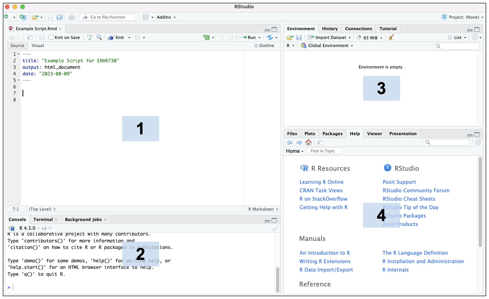
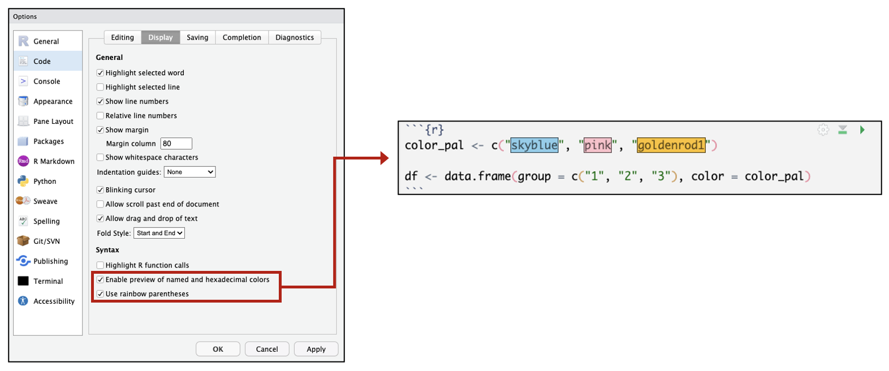
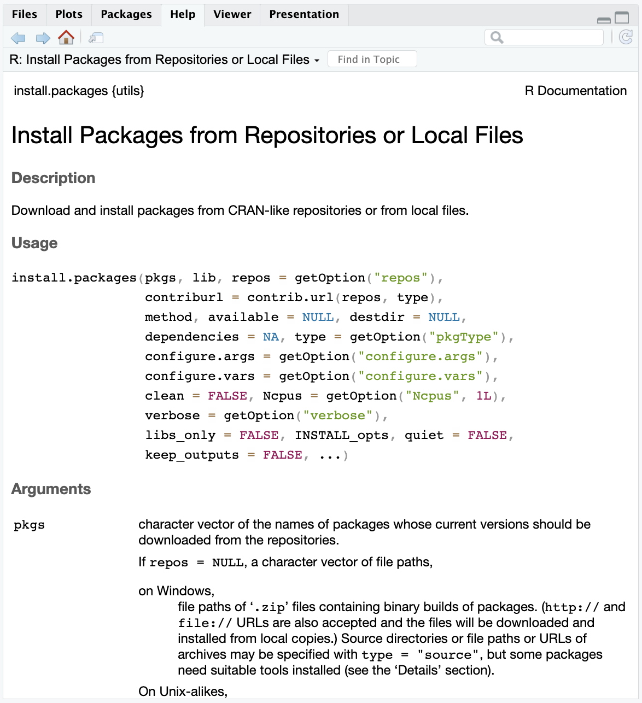
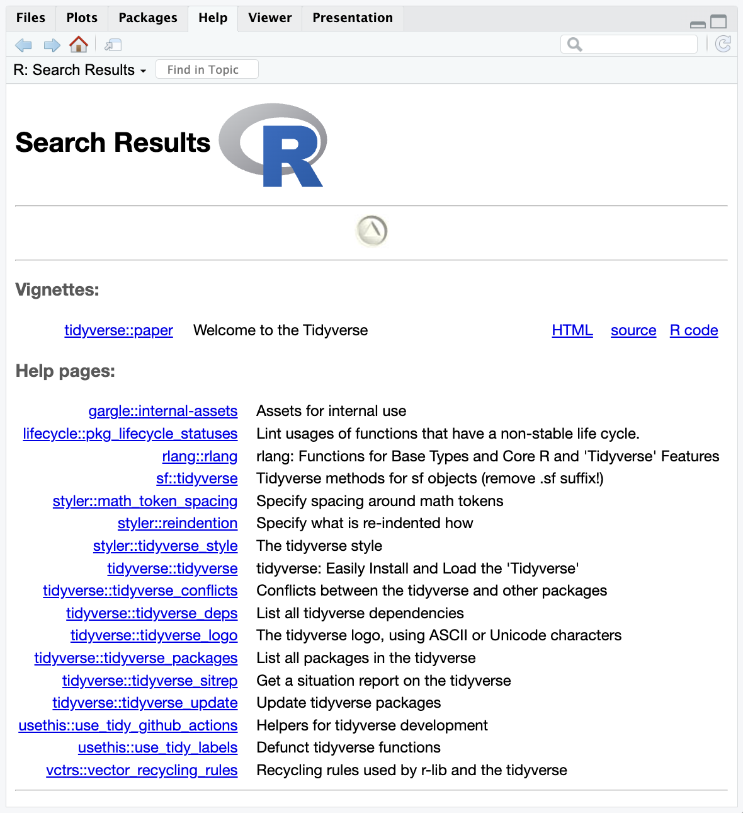
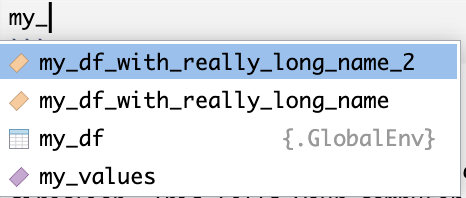
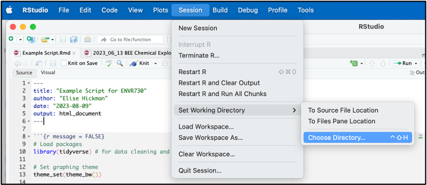
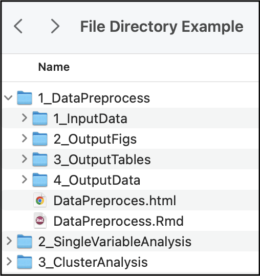
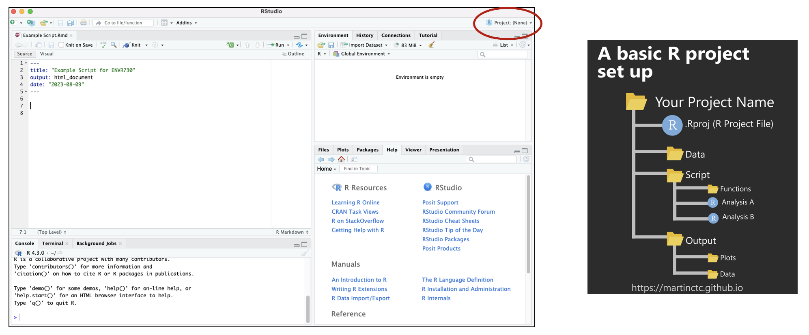

Downloading and Programming in R
This training module was developed by Kyle Roell, Elise Hickman, and Julia E. Rager.
All input files (script, data, and figures) can be downloaded from the UNC-SRP TAME2 GitHub website.
Introduction to Training Module
In this training module, we will provide a brief introduction of:
- R
- R Studio
- Packages in R
- Scripting basics
- Code troubleshooting
General Introduction and Installation of R and RStudio
What is R?
R is a programming language. Computer script (lines of code) can be used to increase data analysis reproducibility, transparency, and methods sharing, and is becoming increasingly incorporated into exposure science, toxicology, and environmental health research. One of the most commonly used coding languages in the field of environmental health science is the R language. Some advantages of using R include the following:
- Free, open-source programming language that is licensed under the Free Software Foundation’s GNU General Public License
- Can be run across all major platforms and operating systems, including Unix, Windows, and MacOS
- Publicly available packages help you carry out analyses efficiently (without you having to code for everything yourself)
- Large, diverse collection of packages
- Comprehensive documentation
- When code is efficiently tracked during development/execution, it promotes reproducible analyses
Because of these advantages, R has emerged as an avenue for world-wide collaboration in data science. Other commonly implemented scripting languages in the field of environmental health research include Python and SAS, among others; and these training tutorials focus on R as an important introductory-level example that also houses many relevant packages and example datasets as further described throughout TAME.
Downloading and Installing R
To download R, first navigate to https://cran.rstudio.com/ and download the .pkg file for your operating system. Install this file according to your computer’s typical program installation steps.
What is RStudio?
RStudio is an Integrated Development Environment (IDE) for R, which makes it more ‘user friendly’ when developing and using R script. It is a desktop application that can be downloaded for free, online.
Downloading and Installing RStudio
To download RStudio:
- Navigate to: https://posit.co/download/rstudio-desktop/
- Scroll down and select “Download RStudio”
- Install according to your computer’s typical program installation steps
RStudio Orientation
Here is a screenshot demonstrating what the RStudio desktop app looks like: 
The default RStudio layout has four main panes (numbered above in the blue boxes):
- Source Editor: allows you to open and edit script files and view data.
- Console: where you can type code that will execute immediately when you press enter/return. This is also where code from script files will appear when you run the code.
- Environment: shows you the objects in your environment.
- Viewer: has a number of useful tabs, including:
- Files: a file manager that allows you to navigate similar to Finder or File Explorer
- Plots: where plots you generate by executing code will appear
- Packages: shows you packages that are loaded (checked) and those that can be loaded (unchecked)
- Help: where help pages will appear for packages and functions (see below for further instructions on the help option)
Under “Tools” → “Global Options,” RStudio panes can be customized to appear in different configurations or with different color themes. A number of other options can also be changed. For example, you can choose to have colors highlighted the color they appear or rainbow colored parentheses that can help you visualize nested code. 
Introduction to R Packages
One of the major benefits to coding in the R language is access to the continually expanding resource of thousands of user-developed packages. Packages represent compilations of code and functions fitted for a specialized focus or purpose. These are often written by R users and submitted to the CRAN, or another host such as BioConductor or Github.
Packages aid in improved data analyses and methods sharing. Packages have varying utilities, spanning basic organization and manipulation of data, visualizing data, and more advanced approaches to parse and analyze data, with examples included in all of the proceeding training modules.
Examples of some common packages that we’ll be using throughout these training modules include the following:
tidyverse: A collection of open source R packages that share an underlying design philosophy, grammar, and data structures of tidy data. For more information on the tidyverse package, see its associated CRAN webpage, primary webpage, and peer-reviewed article released in 2018.
ggplot2: A system for creating graphics. Users provide the data and tell R what type of graph to use, how to map variables to aesthetics (elements of the graph), and additional stylistic elements to include in the graph. For more information on the ggplot2 package, see its associated CRAN webpage and R Documentation.
More information on these packages, as well as many others, is included throughout TAME training modules.
Downloading/Installing R Packages
R packages often do not need to be downloaded from a website. Instead, you can install packages and load them through running script in R. Note that you only need to install packages one time, but packages must be loaded each time you start a new R session.
Many packages also exist as part of the baseline configuration of an R working environment, and do not require manual loading each time you launch R. These include the following packages:
- datasets
- graphics
- methods
- stats
- utils
You can learn more about a function by typing one question mark before the name of the function, which will bring up documentation in the Help tab of the Viewer window. Importantly, this documentation includes a description of the different arguments that can be passed to the function and examples for how to use the function.
## starting httpd help server ... done
You can learn more about a package by typing two question marks before the name of the package. This will bring up vingettes and help pages associated with that package.

Scripting Basics
Data Types
Before writing any script, let’s first review different data types in R. Data types are what they imply – the type of data you are handling. It is important to understand data types because functions often require a specific data type as input.
R has 5 basic data types:
- Logical (e.g., TRUE or FALSE)
- Integer (e.g., 1, 2, 3)
- Numeric (real or decimal)
- Character (e.g., ”apple”)
- Complex (e.g., 1 + 0i)
Numeric variables are often stored as “double” values (sometimes shown as < dbl >), or a decimal type with at least two decimal places. Character variables can also be stored as factors, which are data structures that are implemented to store categorical data in a specific order (also known as levels).
Data are stored in data structures. There are many different data structures in R. Some packages even implement unique data structures. The most common data structures are:
- Vectors: also known as an atomic vector, can contain characters, logical values, integers, or numeric values (but all elements must be the same data type).
- Matrices: a vector with multiple dimensions. Elements must still be all the same data type.
- Data frames: similar to a matrix but can contain different data types and additional attributes such as row names (and is one of the most common data structures in environmental health research). Tibbles are a stricter type of data frame implemented in the tidyverse package.
- Lists: a special type of vector that acts as a container – other data structures can be stored within the list, and lists can contain other lists. Lists can contain elements that are different data structures.
Figure 1: Created with BioRender.com
Writing Script
R code is written line by line. It may take just one line or many lines of code for one step to be executed, depending on the number of arguments to the function you are using. R code is executed (run) by selecting the line(s) of code to run and pressing return/enter (or a keyboard shortcut), or by clicking “Run” in the upper right corner of the script.
A very simple example of running code is as follows:
## [1] 7We can see that when we ran our code, the answer was returned. But what if we want to store that answer? We can assign that number to a variable named x using the assignment operator <-:
Then, if we run a line of code with our variable, we will get that value:
## [1] 7The assignment operator can also be used to assign values to any of the data structures discussed above, such as vectors and data frames, as shown here:
# Creating a vector of values called my_values
my_values <- c(7, 3, 8, 9)
# Viewing the vector
my_values## [1] 7 3 8 9# Creating a data frame of values corresponding to colors
my_df <- data.frame(values = my_values, color = c("Blue", "Red", "Yellow", "Purple"))
# Viewing the data frame
my_df## values color
## 1 7 Blue
## 2 3 Red
## 3 8 Yellow
## 4 9 PurpleAutofilling
RStudio will autofill function names and object names as you type, which can save a lot of time. When you are typing a variable or function name, you can press tab while typing. RStudio will look for variables or functions that match the first few letters you’ve typed. If multiple matches are found, RStudio will provide you with a drop down list to select from, which may be useful when searching through newly installed packages or trying to quickly type variable names in an R script.
For example, let’s say we instead named our example data frame something much longer, and we had two data frames with similar names. If we start typing in my_ and pause our typing, all of the objects that start with that name will appear as options in a list. To select which one to autofill, navigate down the list and click return/enter.
my_df_with_really_long_name <- data.frame(values = my_values, color = c("Blue", "Red", "Yellow", "Purple"))
my_df_with_really_long_name_2 <- data.frame(values = my_values, color = c("Green", "Teal", "Magenta", "Orange"))
Finding and Setting Your Working Directory
Another step that is commonly done at the very beginning of your code is setting your working direction. This tells your computer where to look for files that you want to import and where to deposit output files produced during your scripted activities.
To view your current working directory, run the following:
To set or change the location of your working directory, run the following:
Note that macOS file paths use / to separate folders, whereas PC file paths use \.
You can easily find the file path to your desired working directory by navigating to “Session”, then “Set Working Directory”, and “Choose Directory”:

In the popup box, navigate to the folder you want to set as your working directory and click “Open.” Look in the R console, which will now contain a line of code with setwd() containing your file path. You can copy this line of code to the top of your script for future use. Alternatively, you can navigate to the folder you want in Finder or File Explorer and right click to see the file path.
Within your working directory, you can make sub-folders to keep your analyses organized. Here is an example folder hierarchy:

How you set up your folder hierarchy is highly dependent on your specific analysis and coding style. However, we recommend that you:
- Name your script something concise, but descriptive (no acronyms)
- Consider using dates when appropriate
- Separate your analysis into logical sections so that script doesn’t get too long or hard to follow
- Revisit and adapt your organization as the project evolves!
- Archive old code so you can revisit it
A Quick Note About Projects
Creating projects allows you to store your progress (open script, global environment) for one project in an R Project File. This facilitates quick transitions between multiple projects. Find detailed information about how to set up projects here.

Importing Files
After setting the working directory, you can import and export files using various functions based on the type of file being imported or exported. Often, it is easiest to import data into R that are in a comma separated value / comma delimited file (.csv) or tab / text delimited file (.txt).
Other datatypes such as SAS data files or large .csv files may require different functions to be more efficiently read in, and some of these file formats will be discussed in future modules. Files can also be imported and exported from Excel using the openxlsx package.
Below, we will demonstrate how to read in .csv and .txt files:
# Read in the .csv data that's located in our working directory
csv.dataset <- read.csv("Module2_1_Input/Module2_1_InputData1.csv")
# Read in the .txt data
txt.dataset <- read.table("Module2_1_Input/Module2_1_InputData1.txt")These datasets now appear as saved dataframes (“csv.dataset” and “txt.dataset”) in our working environment.
Viewing Data
After data have been loaded into R, or created within R, you will likely want to view what these datasets look like. Datasets can be viewed in their entirety, or datasets can be subsetted to quickly look at part of the data.
Here’s some example script to view just the beginnings of a dataframe using the head() function:
## Sample Var1 Var2 Var3
## 1 sample1 1 2 1
## 2 sample2 2 4 4
## 3 sample3 3 6 9
## 4 sample4 4 8 16
## 5 sample5 5 10 25Here, you can see that this automatically brings up a view of the first five rows of the dataframe.
Another way to view the first five rows of a dataframe is to run the following:
## Sample Var1 Var2 Var3
## 1 sample1 1 2 1
## 2 sample2 2 4 4
## 3 sample3 3 6 9
## 4 sample4 4 8 16
## 5 sample5 5 10 25This brings us to an important concept - indexing! Brackets are used in R to index. Within the bracket, the first argument represents the row numbers, and the second argument represents the column numbers. A colon between two numbers means to select all of the columns in between the left and right numbers. The above line of code told R to select rows 1 to 5, and, by leaving the column argument blank, all of the columns.
Expanding on this, to view the first 5 rows and 2 columns, we can run the following:
## Sample Var1
## 1 sample1 1
## 2 sample2 2
## 3 sample3 3
## 4 sample4 4
## 5 sample5 5For another example: What if we want to only view the first and third row, and first and fourth column? We can use a vector within the index to do this:
## Sample Var3
## 1 sample1 1
## 3 sample3 9To view the entire dataset, use the View() function:
Another way to view a dataset is to just click on the name of the data in the environment pane. The view window will pop up in the same way that it did with the View() function.
Determining Data Structures and Data Types
As discussed above, there are a number of different data structures and types that can be used in R. Here, we will demonstrate functions that can be used to identify data structures and types within R objects. The glimpse() function, which is part of the tidyverse package, is helpful because it allows us to see an overview of our column names and the types of data contained within those columns.
## Rows: 5
## Columns: 4
## $ Sample <chr> "sample1", "sample2", "sample3", "sample4", "sample5"
## $ Var1 <int> 1, 2, 3, 4, 5
## $ Var2 <int> 2, 4, 6, 8, 10
## $ Var3 <int> 1, 4, 9, 16, 25Here, we see that our Sample column is a character column, while the rest are integers.
The class() function is also helpful for understanding objects in our global environment:
## [1] "data.frame"## [1] "character"These functions are particularly helpful when introducing new functions or troubleshooting code because functions often require input data to be a specific structure or data type.
Exporting Data
Now that we have these datasets saved as dataframes, we can use these as examples to export data files from the R environment back into our local directory.
There are many ways to export data in R. Data can be written out into a .csv file, tab delimited .txt file, or RData file, for example. There are also many functions within packages that write out specific datasets generated by that package.
To write out to a .csv file:
To write out a .txt tab delimited file:
R also allows objects to be saved in RData files. These files can be read into R, as well, and will load the object into the current workspace. Entire workspaces are also able to be saved in RData files, such that when you open an RData file, your script and Global Environment will be just as you saved them. Below includes example code to carry out these tasks, and though these files are not provided, they are just example code for future reference.
# Read in saved single R data object
r.obj = readRDS("data.rds")
# Write single R object to file
saveRDS(object, "single_object.rds")
# Read in multiple saved R objects
load("multiple_data.RData")
# Save multiple R objects
save(object1, object2, "multiple_objects.RData")
# Save entire workspace
save.image("entire_workspace.RData")
# Load entire workspace
load("entire_workspace.RData")Code Troubleshooting
Learning how to code is an iterative, exploratory process. The secret to coding is to…
Make sure to include “R” and the package and/or function name in your search. Don’t be afraid to try out different solutions until you find one that works for you, but also know when it is time to ask for help. For example, when you have tried solutions available on forums, but they aren’t working for you, or you know a colleague has already spent a significant amount of time developing code for this specific task.
Note that when reading question/answer forums, make sure to look at how recent a post is, as packages are updated frequently, and old answers may or may not work.
Some common reasons that code doesn’t work and potential solutions to these problems include:
- Two packages are loaded that have functions with the same name, and the default function is not the one you are intending to run.
- Solutions: specify the package that you want the function to be called from each time you use it (e.g.,
dplyr::select()) or re-assign that function at the beginning of your script (e.g.,select <- dplyr::select)
- Solutions: specify the package that you want the function to be called from each time you use it (e.g.,
- Your data object is the wrong input type (is a data frame and needs to be a matrix, is character but needs to be numeric)
- Solution: double check the documentation (?functionname) for the input/variable type needed
- You accidentally wrote over your data frame or variable with another section of code
- Solution: re-run your code from the beginning, checking that your input is in the correct format
- There is a bug in the function/package you are trying to use (this is most common after packages are updated or after you update your version of R)
- Solution: post an issue on GitHub for that package (or StackOverflow if there is not a GitHub) using a reproducible example
There are a number of forums that can be extremely helpful when troubleshooting your code, such as:
- Stack Overflow: one of the most common forums to post questions related to coding and will often be the first few links in a Google search about any code troubleshooting. It is free to make an account, which allows you to post and answer questions.
- Cross Validated: a forum focused on statistics, including machine learning, data analysis, data mining, and data visualization, and is best for conceptual questions related to how statistical tests are carried out, when to use specific tests, and how to interpret tests (rather than code execution questions, which are more appropriate to post on Stack Overflow).
- BioConductor Forum: provides a platform for specific coding and conceptual questions about BioConductor packages.
- GitHub: can also be used to create posts about specific issues/bugs for functions within that package.
Before you post a question, make sure you have thoroughly explored answers to existing similar questions and are able to explain in your question why those haven’t worked for you. You will also need to provide a reproducible example of your error or question, meaning that you provide all information (input data, packages, code) needed such that others can reproduce your exact issues. While demonstrating a reproducible example is beyond the scope of this module, see the below links and packages for help getting started:
- Detailed step-by-step guides for how to make reproducible examples:
- Helpful packages:
Concluding Remarks
Together, this training module provides introductory level information on installing and loading packages in R, scripting basics, importing and exporting data, and code troubleshooting.
Additional Resources
- Install R and RStudio on your computer.
- Launch RStudio and explore installing packages (e.g., tidyverse) and understanding data types using the built-in datasets in R.
- Make a vector of the letters A-E.
- Make a data frame of the letters A-E in one column and their corresponding number in the alphabet order in the second column (e.g., A corresponds with 1).
Comments
You may have noticed in the code chunks above that there were
#followed by phrases describing the code. R allows for scripts to contain non-code elements, called comments, that will not be run or interpreted. Comments are useful to help make code more interpretable for others or to add reminders of what and why parts of code may have been written.To make a comment, simply use a
#followed by the comment. A#only comments out a single line of code. In other words, only that line will be commented and therefore not be run, but lines directly above/below it will still be run:For more on comments, see TAME 2.0 Module 2.2 Coding Best Practices.